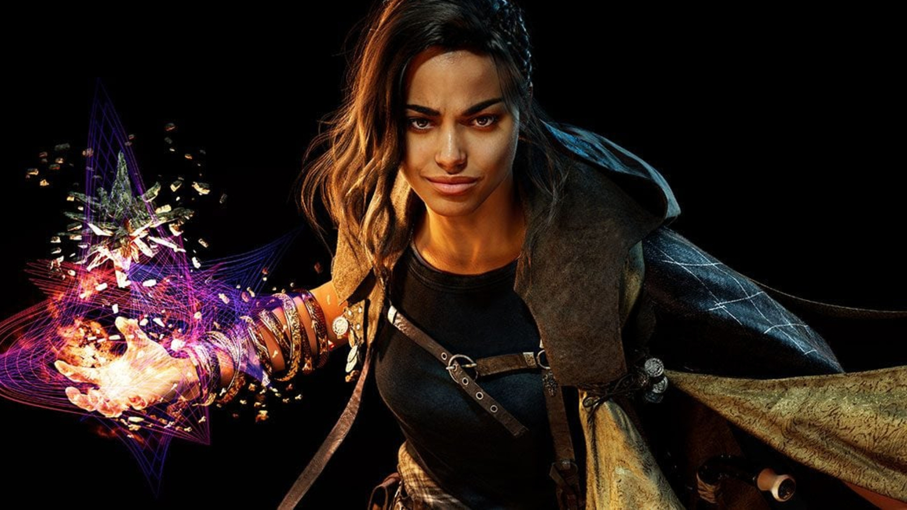

Forspoken’s world and story are about as bland as they come, equal parts predictable and forgettable. That’s not so offensive on its own, but the real crime is how poorly the writing establishes any of its characters and the relationships between them.


Discover new landmarks and hidden secrets as Athia unlocks the mystery.It doesn’t help that Athia lacks much in the way of interesting visual landmarks. It has a rating of 9.0 out of 10 and has great graphics and experience so far.
The newest action-RPG from Square Enix puts you in the brooding shoes of Frey Holland, a well-acted but largely unlikable New Yorker who gets pulled through a portal to the fantasy realm of Athia.Becoming bonded to an equally unlikable talking armband she calls Cuff. The four realms of Athia have been afflicted with a corruption.